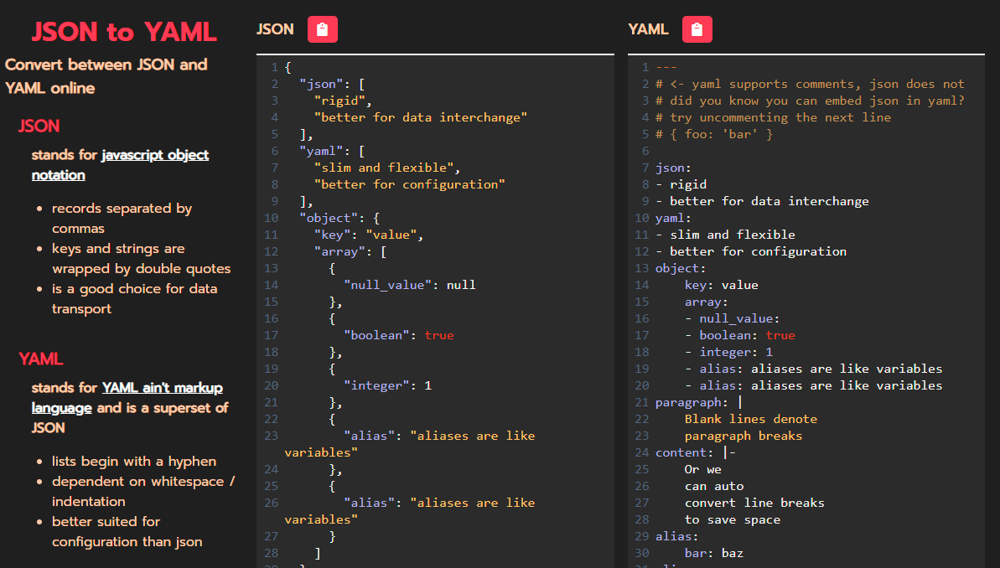

json2yaml is a website I made for converting between the JSON and YAML data formats. Technically, JSON is a subset of YAML, so any valid
JSON object will work in place of YAML. However, YAML is much more human readable and enables a few other features including comments.
Building the tool was a challenge given in the book The Pragmatic Programmer which a friend recently
gave me as a graduation gift and I highly recommend reading it.
I'll also mention the use of CodeMirror which is a very useful component for writing, executing, and syntax highlighting code in your websites that I found.
I'll definitley be using it in future projects.